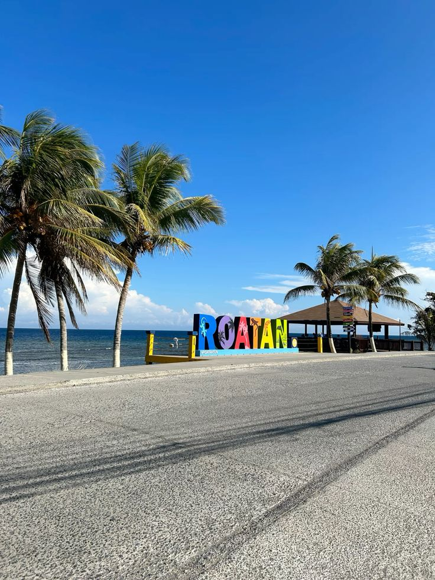

4-Day Itinerary
Honduras is a gem of Central America, boasting lush landscapes, vibrant culture, and pristine beaches. Here's a 4-day itinerary to experience the best of Honduras:
-
Day 1: Explore Tegucigalpa’s historic center, hike at La Tigra National Park, enjoy local Honduran cuisine at a traditional restaurant.


-
Day 2: Visit the Copán Ruins, a UNESCO World Heritage Site, and learn about ancient Mayan civilization. Stay in the charming town of Copán Ruinas.

- Day 3: Head to Roatán Island, snorkel in the Mesoamerican Barrier Reef, and relax on West Bay Beach.
-
Day 4: Kayak through mangroves in Utila, swim with dolphins, and savor a seafood feast by the ocean.